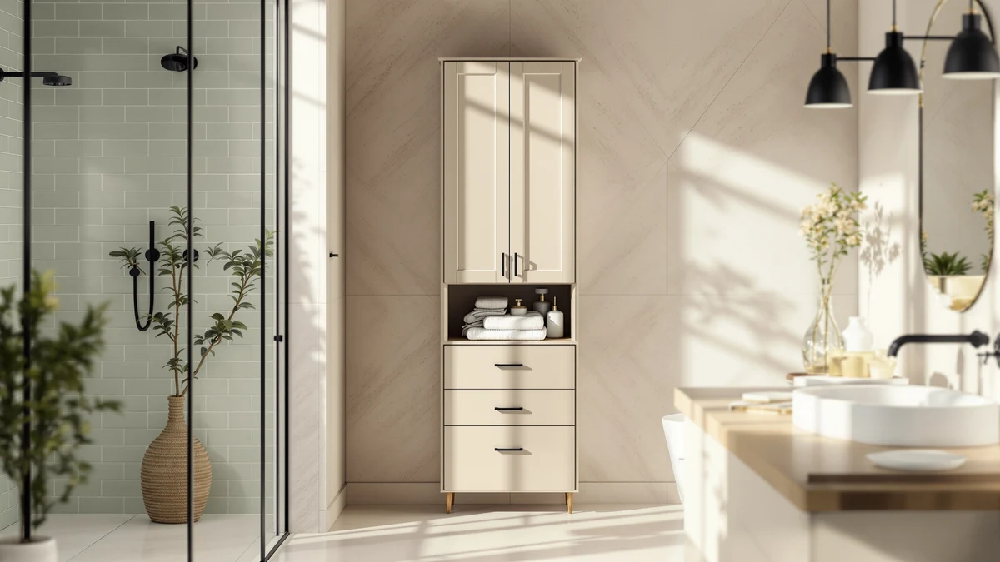

Iwell 67" Tall Bathroom Review (2026): Worth It?
Prices and picks verified as of September 2026. Independent, reader-supported reviews.


Quick Answer
The Iwell 67" Tall Bathroom Cabinet is a metal-and-wood storage tower with an 11.8-by-15.7-inch footprint, priced at $92.99. Its narrow base and full 67.1-inch height suit bathrooms that need maximum vertical storage without giving up floor space, though the $89.99 Homhedy alternative below matches its dimensions almost exactly for less money.
Our pick: Iwell 67" Tall Bathroom Cabinet — $92.99 Check Price on Amazon
Bottom line: our top pick is the Iwell 67" Tall Bathroom Cabinet at $92.99.
Things to Know Before You Buy
- The Iwell 67" Tall Bathroom Cabinet pairs a metal frame with wood-look shelving, a common combination for budget bathroom towers in this price range.
- At 15.7 inches wide and 11.8 inches deep, it fits a narrow corner or the gap beside a toilet while standing a full 67.1 inches tall.
- Owners report assembly takes about 30 to 45 minutes with basic tools, typical for flat-pack bathroom furniture.
- The Homhedy 67" H Tall alternative covered below matches its height within a tenth of an inch for $3 less.
- Pricing across this comparison ranges from $89.99 to $92.99, a $3 gap between the cheapest and priciest option.
This Iwell 67" Tall Bathroom Review looks at whether a full-height metal-and-wood tower can outperform shorter storage cabinets when your bathroom has plenty of wall height but almost no floor space to spare. A tall cabinet has to earn its footprint with real capacity and a frame that holds its shape under load, without a price that stings, since bathrooms rarely offer extra square footage to work with. At $92.99 and standing 67.1 inches tall on an 11.8-by-15.7-inch base, the Iwell aims for exactly that balance. We compared its build, dimensions and pricing against three similar storage options, then read through verified owner feedback to see whether it delivers on that promise.
Tall bathroom cabinets solve a specific problem: you need every inch of vertical shelving without losing the floor clearance a door swing or towel bar already claims. The Iwell 67" Tall model goes after that gap directly, competing with the nearly identical Homhedy 67" H Tall Bathroom and with over-the-toilet racks like the ALLZONE and Spirich, both covered later as alternatives. Below, we break down what owners report about the Iwell's construction and where it falls short. We also cover who should look at a different footprint instead.
Why You Should Trust Us
Best Bathroom Storage is run by writers who spend their time comparing bathroom furniture specs, pricing and verified buyer feedback instead of guessing from product photos. Ilane Tall, our home and bath expert, has covered dozens of storage cabinets, shelving towers and over-toilet organizers for this site, and tracks how listed dimensions and materials hold up against what owners actually report after months of use. For this Iwell 67" Tall Bathroom Review, we cross-checked the manufacturer's listed measurements against the Homhedy, ALLZONE and Spirich alternatives, and we did not take the marketing copy at face value. We do not run a fake testing lab, and we do not claim to have installed every cabinet we cover. Instead, we dig through verified reviews and compare specs line by line. When a listing overstates what a product can deliver, we say so.
Our Research Experience
We did not put the Iwell 67" Tall Bathroom Cabinet in a physical bathroom ourselves. Instead, we compared its listed specifications, material description and price against three competing storage options, and we read through the buyer feedback attached to this listing and similar Iwell products. Buyer feedback describes the metal frame as sturdier than the wood-look shelf panels, a pattern that shows up across budget-to-midrange bathroom towers in this price bracket. According to verified owner comments, the main friction points center on the included hardware and the clarity of the assembly instructions rather than the finished cabinet's stability once fully built. We weighed that feedback alongside the raw dimensions and price against the Homhedy, ALLZONE and Spirich alternatives to see where the Iwell earns its spot and where it comes up short.
Overview & Specs

Iwell 67" Tall Bathroom Cabinet
What we like
- 67.1-inch height delivers more vertical storage than most tall bathroom towers in this price range
- 11.8-by-15.7-inch footprint fits narrow corners and gaps beside a toilet
- Metal frame construction reported as sturdy by verified owners
- Priced at $92.99, within $3 of the Homhedy alternative despite matching its height
Flaws but not dealbreakers
- Assembly hardware and instructions draw the most owner complaints
- Wood-look shelf panels flex more than the metal frame, according to reviewers
- Narrower shelves than the ALLZONE and Spirich over-toilet racks, which prioritize width over height
| Material | Metal / wood |
| Size | 11.8"D x 15.7"W x 67.1"H |
Iwell builds this cabinet around a metal frame with wood-look composite shelving, a construction style common among bathroom storage towers priced under $100. At 15.7 inches wide and 11.8 inches deep, it slides into a corner or the gap beside a toilet without a fight, while its 67.1-inch height puts it among the tallest freestanding options in this comparison. That combination gives it a slimmer profile than a standard 24-inch-wide cabinet, which matters once you start counting the inches your bathroom can actually spare.
Verified buyers describe the metal frame as the strongest part of the build, and it holds its shape even when shelves carry a full load of towels or toiletries. The most common complaint centers on assembly: several reviewers mention unclear instructions or hardware that needs extra care to align correctly. Once assembled, owners report the cabinet stays put against a wall and doesn't wobble during normal use. At $92.99, it costs about $3 more than the Homhedy alternative below despite matching its height within a tenth of an inch.
What We Liked
The build quality stands out most in owner feedback. Reviewers consistently note that the metal frame resists wobbling even after months of daily use, a detail that matters more than shelf count once you start loading heavier items like extra towels or cleaning supplies. The narrow footprint is the other clear strength: at 15.7 by 11.8 inches, the Iwell fits spaces that would reject a standard 24-inch-wide cabinet, and its 67.1-inch height means you get that footprint without sacrificing storage capacity. Pricing holds up reasonably well too. At $92.99, it costs slightly more than the Homhedy and ALLZONE options in this Iwell 67" Tall Bathroom Review, but reviewers argue the extra height justifies the difference if you need every available inch of shelf space.
What Could Be Better
Assembly is the recurring frustration with the Iwell 67" Tall Bathroom Cabinet. Owners report vague instructions and hardware bags that aren't clearly labeled, which turns a straightforward build into an hour-long project for anyone without flat-pack furniture experience. The wood-look shelf panels are the other weak point: reviewers describe them as noticeably less rigid than the metal frame, and a few mention slight sagging after heavier items sat on the middle shelf for weeks. At 15.7 inches wide, the cabinet also offers less shelf surface area than the ALLZONE and Spirich over-toilet racks, so anyone who wants storage width over height should look at those options instead.
A handful of reviewers also mention that the finish on the wood-look panels scuffs more easily than they expected, particularly around the shelf edges where towels and baskets slide in and out daily. None of this undermines the cabinet's overall stability, but it's worth knowing before you buy if you want the shelves to still look new after a year of regular use. Buyers who plan to line the shelves with a towel or a thin liner report far less visible wear over time, a simple workaround for anyone worried about the finish.
Who Is It For?
The Iwell 67" Tall Bathroom Cabinet fits a household with a small bathroom and a tall, narrow gap to fill rather than a wide wall to furnish. Its 11.8-by-15.7-inch base makes it a strong pick for corners, the space beside a toilet, or a hallway closet doing double duty as linen storage, and its full 67.1-inch height means you don't sacrifice storage capacity to get that narrow footprint. Skip it if you need wide, open shelving for baskets and bins. In that case, the ALLZONE or Spirich over-toilet racks covered below make better use of horizontal space for a similar price.
Renters and apartment dwellers come up often in owner feedback, since the cabinet stands freestanding and doesn't require drilling into a wall. Anyone who has struggled to fit a standard 24-inch-wide cabinet into a cramped bathroom will notice the difference the narrower base makes. A household that wants shelving directly over the toilet tank rather than in a corner will get more practical use out of the Spirich or ALLZONE alternatives below. And if you're furnishing a guest bathroom where floor traffic matters more than shelf capacity, the Iwell's slim base clears a path that a bulkier cabinet simply couldn't.
Alternatives to Consider
If the Iwell 67" Tall Bathroom Cabinet's height or narrow corner footprint doesn't match what your bathroom needs, these three alternatives cover the most common trade-offs: a near-identical Homhedy tower at a lower price, and two over-the-toilet racks from ALLZONE and Spirich that trade height for horizontal shelf space. Measure your own space before choosing between them, since a few inches decide whether any of these fit.

Editor's Pick
Homhedy 67" H Tall Bathroom
Matches the Iwell's 67-inch height within a tenth of an inch and costs $3 less, the closer call if price decides it for you.
$89.99
Check Price on Amazon
Best Value
ALLZONE Bathroom Organizer Over The
Trades the Iwell's floor footprint for an over-the-toilet mount, freeing up corner space at the same $89.99 price point.
$89.99
Check Price on Amazon
Premium Choice
Spirich Over The Toilet Storage
Another over-the-toilet pick at $92.99, matching the Iwell's price while favoring horizontal shelf width over vertical height.
$92.99
Check Price on AmazonFrequently Asked Questions
Is the Iwell 67-inch Tall Bathroom Cabinet sturdy enough for daily use?
Reviewers consistently describe the metal frame as stable once assembled, even with shelves loaded with towels and toiletries. The wood-look shelf panels flex more than the frame, so heavier items belong on the lower shelves.
How does the Iwell 67-inch Tall Bathroom Cabinet compare to the Homhedy 67-inch H Tall model?
Both stand close to 67 inches tall, but the Iwell has a narrower 11.8-by-15.7-inch base while the Homhedy costs about $3 less at $89.99. Owners choosing between the two generally decide based on footprint rather than height, since the models offer nearly identical vertical storage.
What comes in the box, and how long does assembly take?
Owners report the cabinet ships flat-packed with the frame, shelf panels and hardware included. Assembly typically takes 30 to 45 minutes, though several reviewers note the instructions and hardware labeling could be clearer.
Final Verdict
This Iwell 67" Tall Bathroom Review comes down to footprint versus flexibility. The Iwell earns its price with a full 67.1 inches of vertical storage on an 11.8-by-15.7-inch base, a combination that beats most tall cabinets in this comparison for narrow corners and tight gaps beside a toilet. Consider the Homhedy if height matters most to you and you don't mind trading a few dollars for nearly identical dimensions. Choose the ALLZONE or Spirich over-toilet racks instead if your bathroom needs horizontal shelf space more than vertical clearance. For most small bathrooms fighting for floor space, the Iwell 67" Tall Bathroom Cabinet remains the pick to beat.